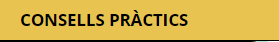

Ara sí! Comencem!
A la columna de l’esquerra , pots veure un menú on podràs moure't per tots els apartats d'aquest curs: presentació digital. Abans d'entrar a investigar que hi ha a cada apartat, et resumiré una mica en què consisteixen tots els apartats i com els pots fer servir.
, pots veure un menú on podràs moure't per tots els apartats d'aquest curs: presentació digital. Abans d'entrar a investigar que hi ha a cada apartat, et resumiré una mica en què consisteixen tots els apartats i com els pots fer servir.
Aquest apartat t’ajudarà si encara no t’has decidit quina eina de presentacions fer servir o bé si mai has fet una presentació, t’ajudarem a escollir la que més t’agradi segons la dificultat o la destresa que tinguis o els resultats que vulguis aconseguir. Però això ja ho descobriràs quan arribis a l’apartat 3.
Dintre d’aquest apartat trobaràs 4 apartats: Presentació Clàssica, Presentació Interactiva, Presentació Visual i Vídeo Presentació Animada. Aquí entrarem a explicar-te quins són els programes i com funcionen per fer la teva magnífica presentació digital. Els manuals i instruccions que et proposem és per iniciar l'aventura de les presentacions i l'explicació és bàsica, però de ben segur que quan comencis a descobrir els programes faràs autèntiques obres d'art!

Una vegada hagis decidit quin programa utilitzar, arriba el moment d’emplenar totes les diapositives amb informació del teu treball. I per on has de començar? Aquest apartat t’ajudarà a fer la teva presentació, et donarem consells per una bona presentació digital. Com has vist a les fotografies de l’apartat “Benvinguda”, no totes les presentacions són iguals, unes són molt avorrides o difícils de seguir.
Doncs aquí tindràs els consells de forma i contingut necessaris per tenir èxit.

Abans d'acabar el curs, et proposem un qüestionari de 10 preguntes a mode de repàs d'alguns conceptes importants a l'hora de fer la presentació.
Ara sí! Preparades i preparats per començar a esbrinar el món de les presentacions digitals,
Som-hi!